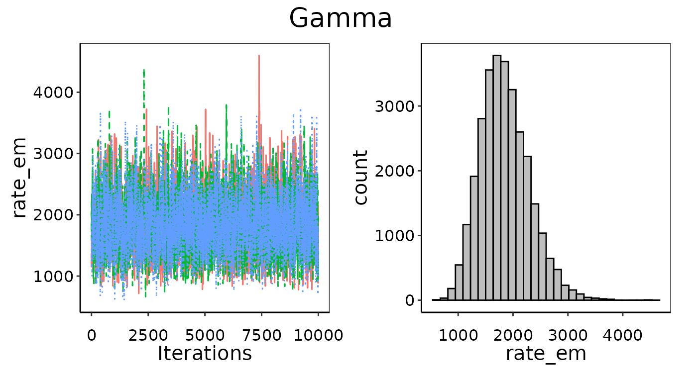
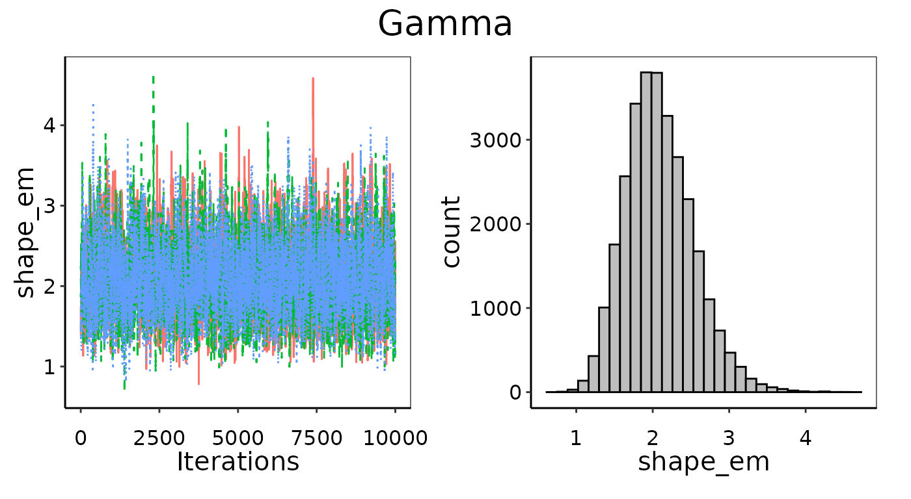

Introduction
This vignette describes the use of the Bayesian_UPL()
function. The goal of Bayesian_UPL() is to provide a
flexible and consistent method of calculating Upper Predictive Limits
(UPL) for any type of emissions data to determine National Emissions
Standards for Hazardous Air Pollutants (NESHAP) for existing and new
sources.
Current UPL methods are only applicable to emissions data that are
distributed Normally, Skewed, or Lognormally. The UPL for Normal data
can be calculated analytically with Normal_UPL() using the
mean, standard deviation, and t-score. However, there are no equivalent
analytical solutions for Skewed or Lognormal UPL calculations. Instead,
Lognormal_UPL() uses a Gram-Charlier Type A Series
expansion to approximate the density distribution and determine the
arithmetic mean of future samples, and Skewed_UPL() uses
the skewness and kurtosis moments to iteratively adjust the t-score
until the desired significance is achieved. All three UPL methods assume
the distribution explicitly and without uncertainty, and assume the
emissions are observed perfectly and independently.
By operating in a Bayesian framework, we can use the same method of deriving the UPL while agnostic to the type of distribution, but also dramatically increase the choices for the distribution. Bayesian inference also benefits from fewer assumptions and better uncertainty quantification. This allows for more accurate representation of emissions data and better transparency and metrics of fitness to support the UPL calculation.
The Bayesian_UPL() uses a Monte Carlo Markov Chain
(MCMC) sampler (a Gibbs sampler implemented via JAGS) to fit probability
distributions to emissions data. For example, when using a Normal
distribution, this entails estimating the mean and standard deviation
which define the distribution. Unlike the Normal_UPL()
analytical solution, we don’t merely get a point-estimate of the mean
and standard deviation, but instead derive a posterior distribution that
describes the full probability for the mean and standard deviation. This
allows us to quantify the uncertainty in the predicted probability
distribution for any future emission observation.
Numerous probability distributions are already implemented in R
stats and JAGS, and any distribution that isn’t, or any
combination of distributions, can be coded manually in JAGS if needed.
For any probability distribution, the UPL is calculated by taking the
99^{th} percentile of the average of new draws (usually 3 new runs to be
comparative to a typical compliance test).
Example: HCl Emissions from Integrated Iron and Steel
Step 1: Load and plot the emissions observations
Let’s look at an example data set of HCl emissions from Integrated
Iron and Steel. This data set as provided is already the set of top
performers in the industry, so there is no need to run
MACT_EG() to select the data. The first step is to load and
plot the emissions data.
dat_emiss=read.csv('IIS_HCl.csv')
emission_mean=mean(dat_emiss$emissions)
dat_means=summarize(dat_emiss,means=mean(emissions),counts=n(),.by='sources')
dat_means$sources=as.factor(dat_means$sources)
dat_means$sources=fct_reorder(dat_means$sources,
dat_means$means,.desc = FALSE)
dat_emiss$sources=factor(dat_emiss$sources,levels=levels(dat_means$sources))
dat_means=arrange(dat_means,means)Take a quick look at the average emission for each source in the data set:
| Source | Average emission | No. of Tests |
|---|---|---|
| CC-BurnsHarbor-IN_BF C Stove Stack | 0.000603 | 12 |
| USS-Braddock-PA_Blast Furnace #3 Stove Stack | 0.000805 | 3 |
| USS-Braddock-PA_Blast Furnace #1 Stove Stack | 0.001240 | 18 |
| CC-IndianaHarbor-IN_IH7 Stove Stack | 0.003050 | 3 |
Next we want to look at density plots of the emission observations.
Our goal is to fit a probability density that best describes the data,
from which we can determine the UPL. In order to know the probability
density is a good match for our emissions data, we want to look at the
empirical density of the observations. For this example we will plot the
density using ggplot2::geom_density() by
source with a lower bound of 0 since negative emissions are
impossible. The UPLforOAR package includes several
ggplot2 themes designed for density figures. The figure
below uses multi_source_theme().
ggplot(aes(emissions,fill=sources),data=dat_emiss)+
geom_density(alpha=0.5,trim=FALSE,bounds=c(0,Inf))+
multi_source_theme()+theme(legend.text = element_text(size=8))+
guides(fill=guide_legend(nrow=2,byrow=TRUE),
color=guide_legend(nrow=2,byrow=TRUE))+
scale_x_continuous(expand=expansion(mult=c(0,0.05)))+
scale_y_continuous(expand=expansion(mult=c(0,0.05)))+
geom_rug(sides='b',aes(x=emissions,color=sources),
alpha=0.5,outside=TRUE)+coord_cartesian(clip='off')+
ggtitle("Source observed populations")+
ylab("Density")+xlab("IIS HCl emissions")+
labs(fill='Top sources',color='Top sources')Observation density of IIS HCl emissions by top performing source.
For most cases however, we will want more control over the density
results. The default settings in obs_density() are designed
to be compatible with typical emissions data, such as appropriate kernel
types, bandwidths, bounds, and estimators, for non-zero data, as well as
a better default bandwidth estimator. Furthermore, we can store the
results directly in our environment rather than them being inside the
ggplot object.
obs_dens_results=obs_density(data=dat_emiss)
Obs_onPoint=obs_dens_results$Obs_onPoint
obs_den_df=obs_dens_results$obs_den_dfThe figure below shows the overall observation density of the top
performing source population, of which it is our goal to determine an
appropriately representative likelihood distribution from which to
calculate the UPL. This figures uses pop_distr_theme() and
plots the obs_density() results above using
ggplot2::geom_line and ggplot2::geom_line. The
emission observations themselves are indicated as points and as a rug
underneath the plot.
ggplot(data=Obs_onPoint)+
geom_line(data=obs_den_df,aes(y=ydens,x=(x_hat)),size=0.75,color='black')+
geom_area(data=obs_den_df,aes(y=ydens,x=(x_hat)),alpha=0.25,fill='black')+
geom_point(aes(y=ydens,x=(emissions)),
size=3,alpha=0.5,shape=19,color='black')+
ylab("Density")+xlab("IIS HCl emissions")+
ggtitle("Overall observed population")+
pop_distr_theme()+
scale_x_continuous(expand=expansion(mult=c(0,0.05)))+
scale_y_continuous(expand=expansion(mult=c(0,0.05)))+
coord_cartesian(clip='off')+
geom_rug(sides='b',aes(x=(emissions)),data=dat_emiss,
alpha=0.5,outside=TRUE,color='black')Observation density of IIS HCl emissions top performers overall population.
Step 2: Explore possible likelihood distributions
You can use an informed decision about which likelihood distributions to investigate. For example, a Beta distribution is only appropriate if the observations are strictly between 0 and 1. In this case, you might see that a Normal distribution is a poor choice given asymmetric shape of the observations clustered above 0. However, for the purposes of the vignette, we will look at all distributions currently supported.
We will fit likelihood models for the following distributions: Beta,
Gamma, Lognormal, Normal, and Skewed. Using the default settings of
Bayesian_UPL() the only other information we need to
provide is the data set with emissions. The
Bayesian_UPL() function will fit the likelihood
distributions using uninformative priors with a wide range of initial
values, test for convergence, test for goodness of fit, organize the
MCMC results for later plotting, and return the UPL for a given
significance and number of future runs. Many of these options can be
adjusted manually or evaluated step-wise, but
Bayesian_UPL() is designed to run with minimal user input
needed.
distributions=c('Beta','Gamma','Lognormal','Normal','Skewed')
results=Bayesian_UPL(data=dat_emiss, distr_list=distributions)seq(0,3*max(data$emissions,length.out=1024)), but can be
changed by supplying the xvals argument to
Bayesian_UPL(). The results for plotting the densities at
observations including error bars are stored in
results$obs_pdf_dat, and those for plotting the densities
along the range of xvals are stored in
results$pred_pdf_dat.
Fitted likelihood distributions for IIS HCl emissions.
Step 3: Selecting a distribution
Unsurprisingly, the Normal distribution does not look good. All of the other distributions are fairly similar to the observation density. How do we pick the best distribution if there are several that seem appropriate?
In some cases you can rule out options visually. For example, while the Skewed distribution fits the probabilities at the emission observations decently well, it has undesirable behavior near 0 emissions. Of all the distributions, the Skewed comes down to 0 probability most abruptly as emissions decline towards 0. Does this seem like realistic behavior? It is more likely that the tiny gap between 0 and the lowest emission measurement is due to testing detection limits, not a true 0 probability that emissions could occur that low.
We can also use quantitative metrics to decide on the best
distribution. All of these metrics can be accessed in
fit_table in the Bayesian_UPL() results. We
can leverage the Bayesian abilities to quantify uncertainty and count
how many
emission observations (black points on the plots above) have densities
within the 95% CI of the predicted probability densities (the error bars
on the plots above). We can also quantify how different the observed and
predicted densities are by looking at the Sum of Squared Errors (SSE):
.
Lastly, we might want to check if the area under the curve of the
probability distribution is close to 1. If it doesn’t integrate to 1,
than it isn’t a proper probability density. This is the case for the
Normal distribution in our example, since some of it would extend below
0 where emissions are not defined, it integrates to less than 1.
fit_metrics=results$fit_table| Distribution | SSE | No. Obs. in 95% CI | integral |
|---|---|---|---|
| Gamma | 98400 | 34 | 0.9870868 |
| Beta | 108000 | 34 | 0.9875739 |
| Skewed | 192000 | 30 | 0.9879832 |
| Lognormal | 220000 | 35 | 0.9858015 |
| Normal | 2810000 | 4 | 0.5671120 |
The Gamma and Beta distributions have the lowest SSE, the most
emission observations with densities in the 95% of the probability
density, and both have areas under the curve that integrate to
approximately 1. The Skewed distribution has slightly higher SSE and
fewer observations in the confidence intervals. The Lognormal
distribution has the most observations in the confidence intervals (by
1), but has a larger SSE due to a few points being particularly
off-target. As expected, the Normal distribution scores the worst on all
accounts. The quantitative results provided in
results$fit_table agree with the visual comparison in the
figure above.
We will select the Gamma distribution, because it is both the best ranked and aligns well in a visual assessment, and because Gamma is defined from (0, Inf) whereas Beta (which is almost as good) is defined from (0, 1). Even though all of out observations are well below 1, this is an unnecessary constraint.
Step 4: Upper Predictive Limits (UPL) results
Now that we have fit the likelihood distributions we can examine the
UPL results. The default values in Bayesian_UPL() assume a
significance of 0.99 and an average of 3 future runs (as is typical in a
compliance test). The significance and
future_runs arguments can be set to other values if
desired, which will not affect the fitted likelihood distribution but
will change the UPL calculation. The UPL results are the variable
UPL stored in results$fit_table:
| Distribution | UPL |
|---|---|
| Gamma | 0.00261 |
| Beta | 0.00260 |
| Skewed | 0.00246 |
| Lognormal | 0.00342 |
| Normal | 0.00291 |
Step 5: Check for convergence
One last step before we can accept the UPL result is to check for convergence. Given how well the Gamma likelihood fit the probability distribution, it is highly unlikely that we have any convergence issues. However, we will need to verify and document the convergence every time. We will check for convergence both quantitatively and qualitatively.
The quantitative convergence results are stored in
results$conv_output. The parameters for each distribution
supplied to Bayesian_UPL() are monitored and assessed for
convergence using the Gelman-Rubin diagnostic, and the corresponding
outcome for convergence is in convYN. If any distribution’s
parameters fail the Gelman-Rubin diagnostic checks for convergence, then
its results cannot be used.
| Distribution | Parameter | Diagnostic | Converged |
|---|---|---|---|
| Beta | alpha_em | 1.001 | Yes |
| Beta | beta_em | 1.002 | Yes |
| Gamma | rate_em | 1.000 | Yes |
| Gamma | shape_em | 1.000 | Yes |
| Lognormal | u_ln | 1.000 | Yes |
| Lognormal | sd_ln | 1.000 | Yes |
| Normal | emission_mean | 1.000 | Yes |
| Normal | emission_sd | 1.000 | Yes |
| Skewed | omega | 1.000 | Yes |
| Skewed | xi | 1.001 | Yes |
| Skewed | alpha | 1.000 | Yes |
The Gelman-Rubin diagnostic will test if the 3 separate MCMC chains
have become well-mixed and without trends. Passing the Gelman-Rubin
convergence test is necessary but not sufficient. A visual examination
of the MCMC iterations and parameter histograms is also necessary. A
well converged visual assessment will show evenly mixed iterations
across all chains and an approximately normal histogram for the
parameter’s posterior distribution. A report with the figures needed to
assess convergence can be generated by Bayesian_UPL() by
setting the argument convergence_report = TRUE. This report
will be saved in your active working directory as
“Bayesian_UPL_convergence_current-date-and-time.pdf”
#> Compiling rjags model...
#> Starting 3 rjags simulations using a PSOCK cluster with 3 nodes on host
#> 'localhost'
#> Simulation complete
#> Finished running the simulation
#> [[1]]
#>
#> [[2]]
Further options for Bayesian UPL analysis
In the example above we used the default settings to automatically
control things such as the prior distribution, initial values, expected
emission range, and observation density evaluation. While the default
settings are a great place to start and might be sufficient for most
uses, the sections below explain the mechanics under-the-hood and full
options in Bayesian_UPL().
Density
In order to know the probability density is a good match for our
emissions data, we want to look at the empirical density of the
observations. This is easy to do with
ggplot2::geom_density(), which uses
stats::density() and can take additional arguments related
to how the density is determined such as the bandwidth bw,
kernel kernel, and known upper and lower limits in
bounds. By default, geom_density() uses no
bounds, a gaussian kernel, and a rule-of-thumb method (not recommended)
of arriving at a bandwidth (Silverman B. W. 1986. Density Estimation
p.48 eq 3.31).
In most situations, we will want more control over the density than
ggplot2::geom_density() provides, and we will want to use
the observation densities outside of the plot later on. For example, all
emissions data will be bounded by 0 and will often have an upper bound
as well. Due to the strictly positive nature of emissions data, a
gaussian kernel is not often a good choice.
Instead we recommend the obs_density() function in
UPLforOAR, which builds on the
np::npuniden.boundary() function, a more accurate density
function for bounded data. By default, obs_density() will
assume a lower bound of 0, no upper bound, and the kernel
type is gamma. Other kernel types accepted by
np::npuniden.boundary() can be used, for example if data
are percent removals instead of emissions then “beta1” or “beta2” with
an upper bound of 1 are more appropriate. The default bandwidth
bw is
(Renault & Scaillet 2004), though manual values or a least-squares
or likelihood search can be used instead by setting
bw = "cv.ls" or bw = "cv.ml".
The results of obs_density() include
ObsonPoint, with the observation densities paired with each
emission value in the provided data set, and obs_den_df, a
sequence of densities across a range of possible emission values
(xvals) based on the observed emissions. The range of
emissions xvals can be supplied manually, and by default is
seq(0,3*max(data$emissions,length.out=1024)).
Run ?obs_density in the console for detailed information
in the help pages.
Priors
Bayesian inference uses prior information to derive posterior
distributions of model parameters. The default behavior in
Bayesian_UPL() is to use uninformative priors which is
calculated based on the range and variance of the emissions data. The
prior information can be manually supplied to either increase the
parameter space to search wider, or to provide more specific
information, which might be particularly useful in circumstances where
there are very few observations (i.e. n = 3).
Convergence
Convergence of distribution parameters is assessed quantitatively using the Gelman-Rubin diagnostic and qualitatively by producing figures in a convergence report pdf document.
and the corresponding outcome for convergence is in
convYN. This will be a “Yes” for diagnostics less than 1.1,
“weak convergence” for values between 1.1 and 1.2, and “No” convergence
for values greater than 1.2.
It is possible for a parameter to pass the Gelman-Rubin test and
indeed be well-mixed, but not arrive at a clear posterior distribution.
This can happen when there is too little data (for example extremely
small data sets where n = 3), and the parameter posterior
is simply returning the prior distribution. For example, a poorly
converged Normal distribution might have an even probability of the mean
being any emission value, in which case the histogram will be flat
across the entire parameter-space.
add example of bad convergence
The visual assessment will also catch any issues with the prior distribution settings. Ideally, we are using uninformative priors for UPL calculations that have equal probability across a parameter-space that is much wider than the posterior result. This is determined automatically from the data, but in some cases that range might not wide enough. This will be apparent if the parameter’s posterior histogram is highly skewed towards the end of the allowed range. In this case, the priors will need to be set manually to a wider uninformative range.
add example of bad posterior
Long- and Heavy-Tailed Distributions
For example some Lognormal. The 99^{th} percentile can be
unreasonably large emission number when long or heavy tail. This is
often an issue when the observations themselves are no where near the
tail, and thus the tail is largely unsupported by any data. In such
circumstances, the UPL can be a value larger than any in the observation
data set, or larger than is physically possible. In such cases it is
necessary to truncate the probability distribution to physically
reasonable bounds. This is done by default as 3 times the maximum
emissions value in the training data, but can be adjusted by setting
maxY.
show example of two distributions, one long-tailed one not, where maxY is varied